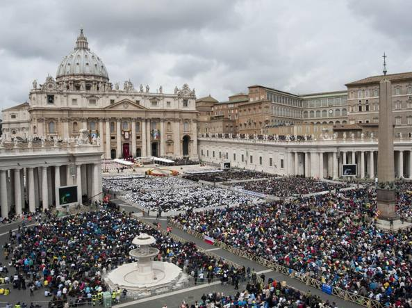

<ion-view view-title="Leggi Articolo" on-swipe-right="goBackAdmin()" on-swipe-left="goForward()">
	<ion-content>


		<div class="row" >
			<div class="col ">
				<h5 style="text-align:right">7 Dicembre 2015</h5>
				<h1 class="title" style="margin-left:5%" style="margin-right:5%">Turismo: effetto Parigi sul Giubileo</h1>
			</div>
		</div>


		<div class="row" style="text-align:center">
			<div class="col ">
				</img>
			</div>
		</div>


		<div class="row">
			<div class="col">
				<h4 style="margin-left:5%" style="margin-right:5%">
					
La paura intimorisce i viaggiatori. Dopo le preoccupazioni espresse da Federalberghi, arriva anche un sondaggio dell’Osservatorio Confturismo-Piepoli a dire che gli attentati di Parigi dello scorso 13 novembre hanno avuto ripercussioni sul desiderio di turisti e pellegrini di visitare Roma durante il Giubileo. D’altronde anche l’83% dei romani dichiara di essere spaventato dalla minaccia del terrorismo, durante le celebrazioni dell’Anno Santo che partirà proprio tra una manciata di ore.
 


La nuova indagine

Si potrebbe tristemente chiamare l’«Effetto Parigi» sul settore turismo: l’indice di fiducia del viaggiatore, a novembre - sempre secondo i dati dell’indagine Confturismo-Confcommercio, condotta in collaborazione con l’Istituto Piepoli - ha infatti subito una battuta d’arresto ed è diminuito. Più di un italiano su tre dichiara di aver paura di andare all’estero, soprattutto in Francia e in Medio Oriente. Qual è considerato il bersaglio più probabile per un eventuale attacco terroristico? Roma, ovviamente, seguita dalla Città del Vaticano, durante il Giubileo.

					
				</h4>
			</div>
		</div>
		<br>

	</ion-content>
</ion-view>